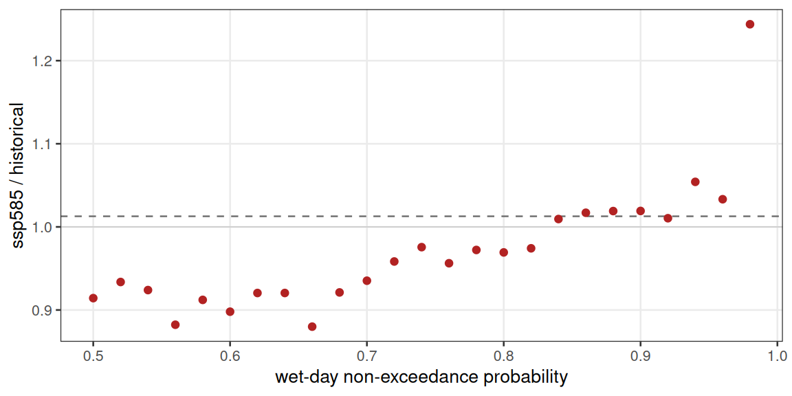
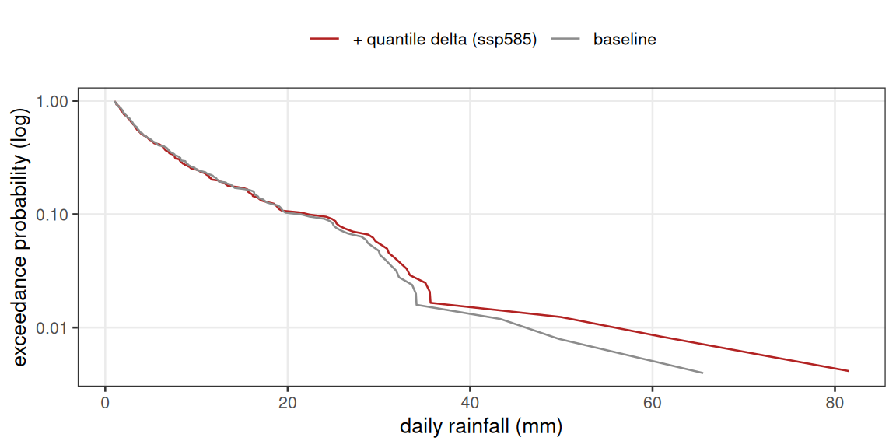
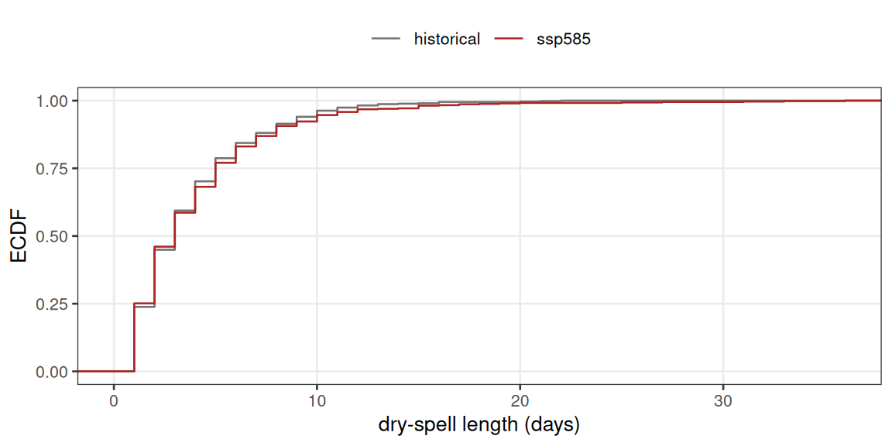
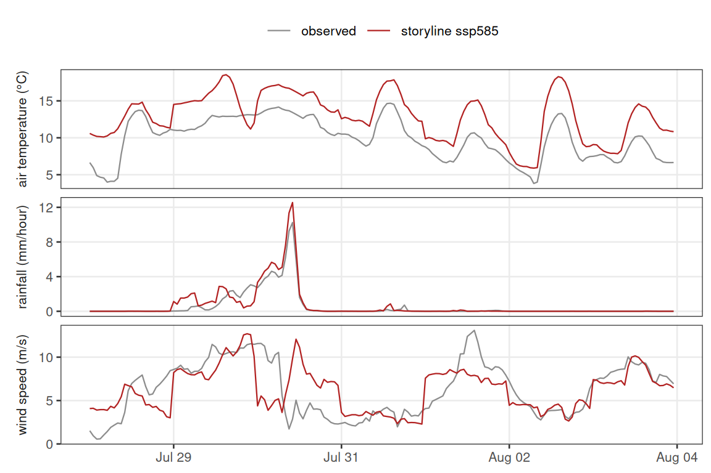

Climate extremes as impact-model forcing
Source:vignettes/climate-extremes.Rmd
climate-extremes.RmdA lake model responds to the tails of its meteorology, not only the seasonal means. Stratification breaks down when a wind burst clears some threshold; a full turnover needs a cold outbreak; bottom-water anoxia follows a long warm calm spell; a nutrient flush follows a single heavy-rain day. The 20-year mean climate can barely move while any of these change substantially.
vignette("scenario-workflow") builds a projection by
adding one monthly-mean change factor per variable to an
observation-anchored baseline. That is the right default for bulk
energy-balance behaviour, but by construction it cannot represent either
of the things that matter for extremes:
- a change in the shape of the distribution — the 99th percentile of daily rainfall moving by more (or less) than the mean;
- a change in the frequency, duration or timing of events — more wet days, longer dry spells, a storm season that shifts.
This vignette shows three complementary ways to keep extremes in the forcing, each leaving a different aspect of the future free to differ from the past — the distribution’s shape, the frequency and timing of events, or the intensity of one specific event — then how to check the result and hand it to a process model.
library(metscale)
library(ggplot2)
theme_set(
theme_bw(base_size = 10) +
theme(panel.grid.minor = element_blank(),
legend.position = "top",
legend.title = element_blank(),
strip.background = element_blank(),
strip.placement = "outside")
)
ex <- system.file("extdata", package = "metscale")
tz <- "Etc/GMT-12"
lon <- 176.2717
lat <- -38.0790
elev <- 279The bundled data is the same small Lake Rotorua slice used elsewhere:
a three-year hourly ERA5-Land extract, the matching buoy record, and the
NIWA CCAM downscaling of NorESM2-MM for 2005–2014
(historical) and 2090–2099 (ssp245, ssp585). A
production study would use a multi-decade reanalysis record and 20-year
climate windows; the code is identical, and the caveats at the end are
largely about that difference in sample size.
Baseline and change signal
The bias-corrected daily baseline and the point CMIP6 series, exactly
as in vignette("scenario-workflow").
obs <- prepare_obs_met(file.path(ex, "rotorua_buoy_met_aeme_hr.csv.gz"),
resample = "hour", tz = tz, station = "rotorua_buoy",
wind_height = 2, verbose = FALSE)
era5 <- read.csv(file.path(ex, "rotorua_era5_hourly_met.csv.gz"), check.names = FALSE)
era5$Date <- as.POSIXct(era5$Date, tz = tz, format = "%Y-%m-%d %H:%M:%S")
attr(era5, "tz") <- tz; attr(era5, "lat") <- lat; attr(era5, "lon") <- lon
fit_vars <- c("MET_tmpair", "MET_tmpdew", "MET_wndspd", "MET_radswd",
"MET_humrel", "MET_prsttn")
bc <- fit_met_bias_correction(era5, obs, vars = fit_vars, method = "scale",
by = "doy-loess", verbose = FALSE)
## corrected hourly record (donor for disaggregation) and corrected daily baseline
era5_corr <- apply_met_bias_correction(era5, bc, expand = TRUE, lat = lat,
lon = lon, elev = elev, tz = tz,
verbose = FALSE)
baseline <- bias_correct_daily_baseline(era5, bc, lat = lat, lon = lon,
elev = elev, tz = tz, verbose = FALSE)
baseline <- baseline[stats::complete.cases(
baseline[c("MET_radswd", "MET_tmpair", "MET_pprain",
"MET_wndspd", "MET_humrel")]), ]
cmip <- extract_cmip6_point(file.path(ex, "rotorua_cmip6"), lon = lon, lat = lat,
vars = c("MET_tmpair", "MET_pprain", "MET_wndspd",
"MET_radswd", "MET_humrel"),
verbose = FALSE)
cmip_by <- split(cmip, cmip$experiment)
REF_YEARS <- 2005:2014
FUT_YEARS <- 2090:2099What a mean delta-change does to extremes
Take the model’s own wet-day rainfall (days with ≥ 1 mm) and compare the future and historical distributions quantile by quantile.
wet <- function(x, mm = 1) x[is.finite(x) & x >= mm]
qq <- c(0.5, 0.75, 0.9, 0.95, 0.98, 0.99)
ratio <- quantile(wet(cmip_by$ssp585$MET_pprain), qq, type = 8) /
quantile(wet(cmip_by$historical$MET_pprain), qq, type = 8)
round(ratio, 3)
#> 50% 75% 90% 95% 98% 99%
#> 0.914 0.962 1.019 1.048 1.244 1.323
## mean wet-day amount and wet-day frequency
c(mean_ratio = mean(wet(cmip_by$ssp585$MET_pprain)) /
mean(wet(cmip_by$historical$MET_pprain)),
wetday_ratio = sum(cmip_by$ssp585$MET_pprain >= 1, na.rm = TRUE) /
sum(cmip_by$historical$MET_pprain >= 1, na.rm = TRUE))
#> mean_ratio wetday_ratio
#> 1.0127547 0.9429892The mean wet-day amount barely changes (ratio near 1) and there are
slightly fewer wet days, but the upper quantiles rise steeply —
the model is projecting rain that falls less often and harder. A single
mean change factor applied to the observed series
(apply_delta() in
vignette("scenario-workflow")) multiplies every quantile by
that same near-1 number and throws the tail signal away.
pr <- seq(0.5, 0.98, 0.02)
qr <- data.frame(
p = pr,
ratio = quantile(wet(cmip_by$ssp585$MET_pprain), pr, type = 8) /
quantile(wet(cmip_by$historical$MET_pprain), pr, type = 8))
mr <- mean(wet(cmip_by$ssp585$MET_pprain)) / mean(wet(cmip_by$historical$MET_pprain))
ggplot(qr, aes(p, ratio)) +
geom_hline(yintercept = mr, linetype = 2, colour = "grey45") +
geom_hline(yintercept = 1, linewidth = 0.3, colour = "grey80") +
geom_point(colour = "firebrick", size = 1.6) +
labs(x = "wet-day non-exceedance probability",
y = "ssp585 / historical")
Figure 1. Ratio of the ssp585 2090–2099
wet-day rainfall quantiles to the 2005–2014 model baseline, by
non-exceedance probability. A mean delta-change (dashed) moves every
quantile by the same factor; the model’s own change (points) steepens
with probability, so the rare heavy days grow while the median wet day
shrinks.
Option 1 — quantile change factors
Instead of one factor per month, derive a change factor at several points of the distribution and interpolate it onto each baseline day by that day’s rank. This is a quantile-perturbation / quantile-delta scheme: it keeps the observed sequence, wet-day count and timing untouched, but lets the tail stretch or contract relative to the centre.
PROB <- c(0.10, 0.25, 0.40, 0.55, 0.70, 0.80, 0.88, 0.94, 0.98)
## multiplicative change factors for wet-day rainfall, applied by rank
qcf_wetday <- function(base_rain, hist_rain, fut_rain,
probs = PROB, wet_mm = 1) {
hh <- wet(hist_rain, wet_mm)
ff <- wet(fut_rain, wet_mm)
cf <- quantile(ff, probs, names = FALSE, type = 8) /
quantile(hh, probs, names = FALSE, type = 8)
out <- base_rain
i <- which(is.finite(base_rain) & base_rain >= wet_mm)
p <- stats::ecdf(hh)(base_rain[i]) # rank of each wet day
out[i] <- base_rain[i] * stats::approx(probs, cf, xout = p, rule = 2)$y
structure(out, cf = data.frame(prob = probs, cf = cf))
}
proj_rain <- qcf_wetday(baseline$MET_pprain,
cmip_by$historical$MET_pprain,
cmip_by$ssp585$MET_pprain)
attr(proj_rain, "cf")
#> prob cf
#> 1 0.10 0.8620993
#> 2 0.25 0.9235811
#> 3 0.40 0.9205284
#> 4 0.55 0.9218211
#> 5 0.70 0.9352455
#> 6 0.80 0.9692887
#> 7 0.88 1.0190282
#> 8 0.94 1.0541719
#> 9 0.98 1.2437818The warped baseline now tracks the modelled steepening far better than a flat factor, though a ten-year sample leaves the very top quantile noisy (the change factor is anchored no higher than the 98th percentile):
targ <- quantile(wet(cmip_by$ssp585$MET_pprain), qq, type = 8) /
quantile(wet(cmip_by$historical$MET_pprain), qq, type = 8)
got <- quantile(wet(proj_rain), qq, type = 8) /
quantile(wet(baseline$MET_pprain), qq, type = 8)
round(rbind(model_target = targ, quantile_delta = got,
mean_delta = rep(mr, length(qq))), 3)
#> 50% 75% 90% 95% 98% 99%
#> model_target 0.914 0.962 1.019 1.048 1.244 1.323
#> quantile_delta 0.996 0.965 1.059 1.042 1.047 1.191
#> mean_delta 1.013 1.013 1.013 1.013 1.013 1.013
exc <- function(x, lab) {
x <- sort(wet(x), decreasing = TRUE)
data.frame(value = x, p_exceed = seq_along(x) / (length(x) + 1), series = lab)
}
ec <- rbind(exc(baseline$MET_pprain, "baseline"),
exc(proj_rain, "+ quantile delta (ssp585)"))
ggplot(ec, aes(value, p_exceed, colour = series)) +
geom_line() +
scale_y_log10() +
scale_colour_manual(values = c("baseline" = "grey55",
"+ quantile delta (ssp585)" = "firebrick")) +
labs(x = "daily rainfall (mm)", y = "exceedance probability (log)")
Figure 2. Wet-day rainfall exceedance curve for the corrected baseline and for the same days after quantile change factors. The median wet day is almost unchanged; the upper tail is lifted, following the model signal in Figure 1. Timing and the number of wet days are exactly those of the baseline.
The same idea covers hot extremes: split the monthly air-temperature change into a lower-quantile and an upper-quantile shift so heatwave days warm more (or less) than an average day, rather than moving the whole month rigidly.
Option 2 — drive from bias-corrected model output
Quantile change factors still ride on the observed calendar, so they
cannot add wet days, lengthen a drought, or move a storm to another
month. To get those you have to take the model’s own daily
sequence. The bundled tas and pr files are
distributed already bias-corrected to a 5 km observational grid
(_bc in the file names); hurs,
rsds and sfcWind are raw. A workable hybrid
is: use the corrected model series directly for temperature and
rainfall, and delta-change the rest onto the baseline.
seas_delta <- function(v, kind) {
h <- cmip_by$historical; f <- cmip_by$ssp585
mh <- as.integer(format(h$Date, "%m")); hy <- as.integer(format(h$Date, "%Y"))
mf <- as.integer(format(f$Date, "%m")); fy <- as.integer(format(f$Date, "%Y"))
a <- tapply(h[[v]][hy %in% REF_YEARS], mh[hy %in% REF_YEARS], mean, na.rm = TRUE)
b <- tapply(f[[v]][fy %in% FUT_YEARS], mf[fy %in% FUT_YEARS], mean, na.rm = TRUE)
d <- if (kind == "ratio") b / a else b - a
stats::setNames(as.numeric(d[as.character(1:12)]), 1:12)
}
mo <- as.integer(format(baseline$Date, "%m"))
hybrid <- baseline
hybrid$MET_tmpair <- baseline$MET_tmpair + seas_delta("MET_tmpair", "add")[mo]
hybrid$MET_radswd <- baseline$MET_radswd + seas_delta("MET_radswd", "add")[mo]
hybrid$MET_wndspd <- baseline$MET_wndspd * seas_delta("MET_wndspd", "ratio")[mo]
hybrid$MET_humrel <- baseline$MET_humrel * seas_delta("MET_humrel", "ratio")[mo]
hybrid$MET_pprain <- as.numeric(proj_rain)
hybrid <- expand_met(hybrid[, c("Date", "MET_radswd", "MET_tmpair", "MET_pprain",
"MET_humrel", "MET_wndspd", "MET_prsttn")],
lat = lat, lon = lon, elev = elev, tz = tz)Whether or not you route temperature and rainfall through the hybrid,
the change in event frequency and clustering only exists in the
model series. Dry-spell lengths, model historical vs
ssp585:
spell_len <- function(is_dry) { r <- rle(is_dry); r$lengths[r$values] }
dh <- spell_len(cmip_by$historical$MET_pprain < 1)
df <- spell_len(cmip_by$ssp585$MET_pprain < 1)
rbind(historical = c(mean = mean(dh), p90 = quantile(dh, 0.9, names = FALSE), max = max(dh)),
ssp585 = c(mean = mean(df), p90 = quantile(df, 0.9, names = FALSE), max = max(df)))
#> mean p90 max
#> historical 3.787440 8 22
#> ssp585 4.063652 8 36
sp <- rbind(data.frame(len = dh, exp = "historical"),
data.frame(len = df, exp = "ssp585"))
ggplot(sp, aes(len, colour = exp)) +
stat_ecdf() +
coord_cartesian(xlim = c(0, max(df))) +
scale_colour_manual(values = c(historical = "grey45", ssp585 = "firebrick")) +
labs(x = "dry-spell length (days)", y = "ECDF")
Figure 3. Distribution of consecutive dry-day (< 1
mm) run lengths in the model historical and ssp585 windows.
The bulk is similar but the ssp585 upper tail reaches
longer droughts. A delta-change or quantile-delta projection keeps the
observed run-length distribution unchanged and cannot show this.
The price is that you inherit the model’s day-to-day behaviour and its sub-daily silence: the series is daily, so hourly structure still has to come from a donor (next section), and any error in the model’s wet-day sequencing is now in your forcing.
Option 3 — storyline perturbation of an observed event
When the study is about one kind of event — the flood-driving storm, the stratification-breaking gale — perturb a real observed event with the projected thermodynamics and drive the model with that. Here: take the wettest seven-day window of the corrected record, warm it by the seasonal mean change, scale its rainfall by Clausius–Clapeyron (about 7% per degree of warming), scale wind by its own change factor, then disaggregate the perturbed daily event to hourly.
dd <- as.Date(era5_corr$Date, tz = tz)
wksum <- tapply(era5_corr$MET_pprain, dd, sum, na.rm = TRUE)
udays <- as.Date(names(wksum))
roll7 <- as.numeric(stats::filter(as.numeric(wksum), rep(1, 7), sides = 1))
d0 <- udays[which.max(roll7)] - 6
ev_hr <- era5_corr[dd >= d0 & dd < d0 + 7, ]
ev_day <- met_to_daily(ev_hr, tz = tz, min_frac = 1)
m <- as.integer(format(d0, "%m"))
dT <- seas_delta("MET_tmpair", "add")[m] # seasonal mean warming
fW <- seas_delta("MET_wndspd", "ratio")[m]
a <- 0.07 # CC scaling per degC
story <- ev_day
story$MET_tmpair <- ev_day$MET_tmpair + dT
story$MET_pprain <- ev_day$MET_pprain * (1 + a)^dT
story$MET_wndspd <- ev_day$MET_wndspd * fW
story <- expand_met(story[, c("Date", "MET_radswd", "MET_tmpair", "MET_pprain",
"MET_humrel", "MET_wndspd", "MET_prsttn")],
lat = lat, lon = lon, elev = elev, tz = tz)
round(c(warming_degC = unname(dT), rain_factor = unname((1 + a)^dT),
wind_factor = unname(fW)), 3)
#> warming_degC rain_factor wind_factor
#> 3.005 1.225 0.931
story_hr <- disaggregate_met_to_hourly(story, donor = era5_corr,
method = "fragments", swr = "clearsky",
lat = lat, lon = lon, elev = elev, tz = tz,
seed = 1, expand = TRUE, verbose = FALSE)
vs <- c(MET_tmpair = "air temperature (°C)",
MET_pprain = "rainfall (mm/hour)",
MET_wndspd = "wind speed (m/s)")
mk <- function(d, lab) data.frame(
Date = rep(d$Date, length(vs)),
value = unlist(d[names(vs)], use.names = FALSE),
variable = factor(rep(unname(vs), each = nrow(d)), unname(vs)),
series = lab)
sf <- rbind(mk(ev_hr, "observed"), mk(story_hr, "storyline ssp585"))
ggplot(sf, aes(Date, value, colour = series)) +
geom_line(linewidth = 0.4) +
facet_wrap(~ variable, ncol = 1, scales = "free_y", strip.position = "left") +
scale_colour_manual(values = c("observed" = "grey55",
"storyline ssp585" = "firebrick")) +
labs(x = NULL, y = NULL)
Figure 4. The wettest observed week in the corrected
record (grey) and its storyline ssp585 counterpart (red):
air temperature shifted by the seasonal mean warming, hourly rainfall
scaled by Clausius–Clapeyron, wind by its seasonal factor. The event
keeps its observed timing and within-day structure; its intensity is
rescaled.
Storylines make no frequency claim — they answer “how would this event look in a warmer climate”, not “how often”. Run a handful spanning the observed event set rather than one.
Disaggregation settings that matter for extremes
Any daily projection still has to be disaggregated for a sub-daily
lake model. For extremes the defaults of
disaggregate_met_to_hourly() need a second look.
-
method = "fragments"(the default) borrows a whole observed day’s shape, so a wet target day gets a genuinely intermittent wet-hour pattern.method = "diurnal"imposes a smooth mean cycle and will understate peak hourly rain and gusts — avoid it when the sub-daily peak is the point. -
swr = "clearsky"rebuilds shortwave from solar geometry, so a bright clearing after a front is not damped by an analogue day. Keep it. -
sample_top_kandseedcontrol how much the borrowed shape varies. Withsample_top_k > 1the donor is drawn from the k closest analogue days, so a seed ensemble maps the sub-daily uncertainty that a single run hides:
wm <- names(which.max(tapply(hybrid$MET_pprain, format(hybrid$Date, "%Y-%m"), sum)))
slice <- hybrid[format(hybrid$Date, "%Y-%m") == wm, ]
peak <- t(sapply(1:12, function(s) {
h <- disaggregate_met_to_hourly(slice, donor = era5_corr, method = "fragments",
swr = "clearsky", lat = lat, lon = lon, elev = elev, tz = tz,
seed = s, sample_top_k = 5, expand = FALSE, verbose = FALSE)
c(peak_rain = max(h$MET_pprain), peak_wind = max(h$MET_wndspd))
}))
round(rbind(min = apply(peak, 2, min), max = apply(peak, 2, max)), 2)
#> peak_rain peak_wind
#> min 12.74 10.44
#> max 12.74 15.14
sum(slice$MET_pprain) # daily totals are identical across every seed
#> [1] 221.456The peak hourly wind of the month swings by several m s-1 between seeds while every daily mean is held fixed. The peak hourly rain here barely moves, for a revealing reason: the donor record is only three years long, so the very wettest projected days have almost no close analogue and are disaggregated from essentially one donor day. A longer donor record is what widens that pool — see the caveats.
- Conservation. Disaggregation conserves daily means and daily totals, so it never invents a daily extreme that was not in the projection — and never sharpens a sub-hourly burst beyond what the donor day had.
hh <- disaggregate_met_to_hourly(slice, donor = era5_corr, method = "fragments",
swr = "clearsky", lat = lat, lon = lon, elev = elev, tz = tz,
seed = 1, expand = TRUE, verbose = FALSE)
back <- met_to_daily(hh, tz = tz, min_frac = 1)
i <- match(as.Date(back$Date), as.Date(slice$Date))
sapply(c("MET_tmpair", "MET_humrel", "MET_pprain"),
function(v) max(abs(back[[v]] - slice[[v]][i])))
#> MET_tmpair MET_humrel MET_pprain
#> 0.0004166667 0.0004583333 0.0030000000Wind speed is the exception: it is conserved to the daily
vector mean, not the scalar mean speed that
met_to_daily() reports, so the two differ by the within-day
directional variability (see ?disaggregate_met_to_hourly).
That is a property of the wind convention, not a disaggregation
error.
Diagnosing extremes in the forcing
Before a model run, confirm the forcing actually carries the extremes you expect. Cheap checks:
annual_max <- function(d, v) {
yr <- as.integer(format(d$Date, "%Y"))
tapply(d[[v]], yr, max, na.rm = TRUE)
}
rbind(historical = summary(annual_max(cmip_by$historical, "MET_pprain")),
ssp585 = summary(annual_max(cmip_by$ssp585, "MET_pprain")))
#> Min. 1st Qu. Median Mean 3rd Qu. Max.
#> historical 48.56650 51.66044 73.35311 71.31775 87.12983 101.6269
#> ssp585 50.18786 64.71913 80.77135 85.06973 88.99155 147.7563
## wet-hour fraction of the disaggregated projection vs the donor
c(donor = mean(era5_corr$MET_pprain > 0.1),
project = mean(story_hr$MET_pprain > 0.1))
#> donor project
#> 0.1889323 0.2738095Useful diagnostics, roughly in order of effort: annual-block maxima
of daily rain and daily-mean wind; empirical return periods (rank the
values, plot value against (n + 1) / rank / years); wet-day
and wet-hour fractions; dry- and calm-spell length distributions
(rle() as above); and, if the model output allows it, the
seasonal timing of the annual maximum. Compare every one of these
between baseline and projection, and between disaggregated hourly and
its daily input.
Handing extreme forcing to a lake model
met_to_cf() writes the projection to a CF-compliant
table; with AEME installed it goes straight onto an
aeme object.
inp <- AEME::input(aeme)
inp$meteo <- story_hr # or the disaggregated hybrid projection
AEME::input(aeme) <- inpPoints specific to an extremes study:
- Match the driver to the mechanism. Mixing and surface heat/moisture fluxes scale with wind speed squared or cubed, so they are set by the sub-daily gust, not the daily mean — the seed ensemble above is part of the forcing uncertainty. Heavy rain usually enters a lake model through a separate catchment-hydrology step; the direct surface term is the freshwater lens and the latent-heat change. Stratification and its breakdown follow shortwave and the cold-outbreak minima.
- Timestep. Drive at the hourly resolution the disaggregator produces; let the model sub-step. Aggregating back to daily before the run discards the reason for doing any of this.
- Spin-up. Precede each window with one to two years of forcing so deep water and sediment temperature are not carrying the initial condition into the event of interest.
- Ensemble, not a run. The irreducible spread is disaggregation seed x scenario x (ideally) GCM. A single projected hourly series is one draw; return periods and event magnitudes need the spread.
-
Conserve and check. Re-aggregate the hourly forcing
with
met_to_daily()and confirm it reproduces the daily projection before trusting any model output built on it.
Caveats
- Stationarity, again. Every method here assumes a relationship fitted on the past — a quantile map, a change factor, a CC rate, a donor library — holds in the future. The assumption is strongest for the mean and weakens quickly into the tail.
- Quantile change factors and delta-change keep the observed calendar. They can restretch the distribution but cannot add an event, lengthen a spell, or move a storm’s season. Only Option 2 can, and only to the extent the model gets sequencing right.
- Short records starve the tail. Ten-year windows put only a handful of values above the 98th percentile, so the change factors and return periods in this vignette are illustrative, not robust — use long reanalysis records and 20-year (or pooled multi-model) windows. A short hourly donor likewise leaves the rarest days with one analogue; lengthen it to sample sub-daily structure.
- Disaggregation borrows, it does not sharpen. The hourly series can be no peakier than the observed donor days it is built from; genuine change in sub-daily intensity (convective bursts under warming) is outside what a method-of-fragments disaggregator can produce.
-
One model is not a projection. Treat the
ssp245–ssp585spread as a lower bound on uncertainty and add more GCMs before quoting a number.
See ?scenario_workflow and
vignette("scenario-workflow") for the mean-change pipeline
these methods extend.